Auxiliar 4: Primera Ley II
Siete problemas que cierran la primera ley: procesos isobáricos y adiabáticos encadenados, demostraciones con diferenciales totales, coeficiente de Joule-Thomson de un gas de Van der Waals, y una primera aplicación de la ley de Hess.
Temas que ejercita
- Encadenamiento de procesos isobárico y adiabático con transferencia entre recipientes
- Demostraciones formales usando los diferenciales totales de $U$ y $H$
- Consecuencias de la ley de Joule: qué derivadas se anulan en un gas ideal
- Análisis cualitativo de transformaciones isotérmicas e isoentálpicas
- Coeficiente de Joule-Thomson de un gas de Van der Waals
- Cálculo de $\Delta H$ en compresión isotérmica de un gas real
- Enfriamiento por expansión Joule-Thomson en una sola etapa
- Relación $C_P - C_V = R$ y su demostración
- Proceso adiabático reversible: demostración de $TV^{\gamma-1} = $ cte.
- Entalpías estándar de formación y ley de Hess (adelanto de las clases 7 y 8)
Herramientas que hay que tener a mano
Diferenciales totales
$dU = (\partial U/\partial V)_T\,dV + C_V\,dT$ y $dH = (\partial H/\partial P)_T\,dP + C_P\,dT$. Casi todas las demostraciones de este auxiliar consisten en escribir uno de estos dos y aplicar la restricción del proceso.
Consecuencias de la ley de Joule
Si $(\partial U/\partial V)_T = 0$ entonces también $(\partial H/\partial P)_T = 0$, $(\partial U/\partial P)_T = 0$ y $(\partial H/\partial V)_T = 0$. Todas se demuestran a partir de $H = U + PV = U + nRT$ para gas ideal.
Adiabático reversible
Partir de $dU = -\bar\delta W$ con $\bar\delta W = P\,dV$ y $dU = nC_V\,dT$, sustituir $P = nRT/V$ y separar variables. Integrando aparece $TV^{\gamma-1} =$ cte., y con la ley de estado sus formas equivalentes.
Joule-Thomson
$\mu_{\text{JT}} = (\partial T/\partial P)_H$, y por la regla cíclica $(\partial H/\partial P)_T = -\mu_{\text{JT}}C_P$. Con eso, $\Delta H$ de un proceso isotérmico de un gas real se calcula integrando en $P$.
Sistema de dos recipientes
Cuando dos gases se transfieren a un tanque común: los moles se suman, y el estado final se obtiene aplicando la ley del gas ideal al volumen total y a la temperatura indicada. Es la misma estructura del P3 del Auxiliar 1.
Ley de Hess
Combinar linealmente reacciones tabuladas hasta reproducir la reacción objetivo. Invertir cambia el signo de $\Delta H$; multiplicar por $n$ lo escala. Un cambio de fase ($\Delta H_{\text{vap}}$) es un paso más del ciclo.
Fórmulas que se usan





Problemas
El recipiente 2 contiene un gas B a 15 atm, $V_3$ y $T_3$ (el estado final de A). Ambos gases ideales se transfieren a un tanque de volumen $V_1 + V_2$, mantenido a la temperatura del estado inicial de A.
A partir de la definición de trabajo, encontrar una expresión conveniente y determinar la presión total del tercer tanque. Dato: $C_{P,A} = 0{,}12$ L·atm/(mol·K).
- El calor total (150 kJ) corresponde sólo al tramo isobárico, porque el adiabático tiene $Q = 0$. De ahí: $Q_P = nC_{P,A}(T_2 - T_1)$.
- El trabajo total es la suma de ambos tramos: $W_{\text{total}} = W_{1\to2} + 764$ kJ. Aplicar $\Delta U_{\text{total}} = Q - W$ al conjunto.
- En el adiabático, $W_{2\to3} = -\Delta U_{2\to3} = -nC_V(T_3 - T_2)$: eso permite despejar $T_3$ si se conoce $n$, o viceversa.
- Usar $C_V = C_P - R$ para el gas A, cuidando que $R$ vaya en L·atm/(mol·K) para calzar con el $C_P$ dado.
- Con las dos ecuaciones (calor isobárico y trabajo adiabático) despejar $n_A$ y $T_1$. Aquí es donde entra la "expresión conveniente" que pide el enunciado.
- Calcular $V_1$, $V_2$ y $V_3$ con la ley del gas ideal en cada estado.
- Para el gas B: está a 15 atm en $V_3$ y $T_3$, así que $n_B = P_BV_3/RT_3$.
- Tanque final: sumar $n_A + n_B$, volumen $V_1 + V_2$, temperatura $T_1$. Aplicar $P = n_tRT_1/(V_1+V_2)$.
Indicación: partir de las expresiones para el diferencial total de la energía interna y de la entalpía.
- Establecer primero $(\partial U/\partial V)_T = 0$ desde el experimento de Joule: expansión contra el vacío ($W=0$) en recipiente aislado ($Q=0$) da $dU = 0$, y como $dT = 0$ pero $dV \neq 0$, la derivada debe anularse.
- Escribir el diferencial total de $H(T,P)$ y el de $U(T,V)$.
- Usar $H = U + PV = U + nRT$ para el gas ideal: el lado derecho depende sólo de $T$.
- Derivar esa identidad respecto de $P$ a $T$ constante: el término $U$ contribuye vía $(\partial U/\partial V)_T(\partial V/\partial P)_T$, que se anula por el primer paso; y $nRT$ no depende de $P$.
- Concluir. Vale la pena dejar explícito dónde se usa la idealidad — es lo que distingue una demostración de una manipulación.
- En una transformación isotérmica: determinar la variación de $U$ debida a un cambio de presión; la de $H$ debida a un cambio de volumen; y la de $H$ debida a un cambio de presión.
- En una transformación isoentálpica: determinar la variación de temperatura debida a un cambio de presión.
- Si aumentan a la vez presión y volumen, ¿qué ocurre con la temperatura? Y si sólo aumenta la presión a volumen constante?
- Si aumenta la presión y disminuye el volumen, ¿qué cambio experimenta la temperatura?
- (a) Todas las derivadas pedidas se anulan, y la razón es la misma: para un gas ideal $U$ y $H$ dependen sólo de $T$. Expresar cada una mediante la regla de la cadena a partir de $(\partial U/\partial V)_T = 0$.
- (b) La derivada pedida es $\mu_{\text{JT}} = (\partial T/\partial P)_H$. Para gas ideal $H = H(T)$, luego $H$ constante implica $T$ constante y la derivada es cero.
- (c) y (d) Usar $PV = nRT$: la temperatura es proporcional al producto $PV$. Si ambos aumentan, $T$ aumenta. Si $P$ aumenta con $V$ fijo, $T$ aumenta.
- Para (d), con $P$ subiendo y $V$ bajando el producto puede ir en cualquier dirección: la respuesta es que depende de las magnitudes relativas de ambos cambios. Indicar el criterio: comparar $P_2V_2$ con $P_1V_1$.
- El enunciado insiste en justificar los supuestos. La idealidad es el supuesto central de (a) y (b), y hay que decirlo explícitamente.
- Un mol de CO se somete a una compresión isotérmica a $T = 300$ K desde 1 atm hasta 500 atm. Determinar el cambio de entalpía $\Delta H$ en calorías. Datos: $a = 1{,}485\ \mathrm{L^2atm/mol^2}$, $b = 0{,}04$ L/mol.
- El gas sufre una expansión de Joule-Thomson: parte a $17\,^\circ$C y tras la expansión alcanza su temperatura de ebullición ($-191{,}5\,^\circ$C). ¿Cuál era la presión inicial que permitió semejante enfriamiento en una sola etapa?
- (a) Usar $(\partial H/\partial P)_T = -\mu_{\text{JT}}C_P$. Al sustituir la expresión dada de $\mu_{\text{JT}}$, el $C_P$ se cancela: queda $(\partial H/\partial P)_T = b - 2a/RT$, independiente de $C_P$.
- Integrar en $P$ desde 1 hasta 500 atm a $T$ fija. Como el integrando es constante a $T$ constante, $\Delta H = (b - 2a/RT)(P_2 - P_1)$.
- Convertir el resultado de L·atm a calorías ($1$ L·atm $= 24{,}22$ cal). Verificar el signo: con $2a/RT > b$ a 300 K, $\Delta H$ debe salir negativo.
- (b) Aquí el proceso es a $H$ constante, no a $T$ constante. Usar $\Delta T = \mu_{\text{JT}}\Delta P$ con $\Delta T = T_f - T_i$ conocido.
- Evaluar $\mu_{\text{JT}}$: necesita $C_P$ del CO. Como es diatómico, $C_P = \tfrac72R$.
- Despejar $\Delta P$ y de ahí $P_i$, sabiendo que la expansión termina presumiblemente a presión atmosférica. Como $\mu_{\text{JT}}$ varía con $T$ en un salto tan grande, comentar que el resultado es una estimación con $\mu_{\text{JT}}$ evaluado a la temperatura inicial.
- Determinar la presión del gas en bar.
- Demostrar la relación entre $C_P$ y $C_V$ para gases ideales.
- Determinar la capacidad calorífica a volumen constante.
- (a) Aplicar $P = nRT/V$ y convertir a bar. Cuidar que $R$ y las unidades de $V$ sean consistentes.
- (b) Partir de $C_P - C_V = \left[P + (\partial U/\partial V)_T\right](\partial V/\partial T)_P$.
- Anular el segundo término dentro del corchete por la ley de Joule, y calcular $(\partial V/\partial T)_P = R/P$ derivando la ley del gas ideal.
- Concluir $C_P - C_V = R$ por mol. Señalar explícitamente en qué paso se usó la idealidad.
- (c) Restar: $\bar C_V = \bar C_P - R$. Comparar con el valor teórico de un diatómico ($\tfrac52R \approx 20{,}8$ J/(mol·K)) y comentar la coincidencia.
- Demostrar que para un gas ideal en una transformación adiabática reversible se cumple $TV^{\gamma-1} = $ cte., con $\gamma = C_P/C_V$.
- Inicialmente 5 mol de nitrógeno están a $25\,^\circ$C y 10 bar, con $\bar C_V = 20{,}8\ \mathrm{J/(mol\,K)}$ independiente de $T$. El sistema experimenta una expansión adiabática reversible hasta que la presión baja a 1 bar. Usando la relación demostrada, determinar la temperatura final, $\Delta U$ y $\Delta H$.
- (a) Adiabático: $\bar\delta Q = 0$, luego $dU = -\bar\delta W$. Reversible: $\bar\delta W = P\,dV$.
- Sustituir $dU = nC_V\,dT$ y $P = nRT/V$ para obtener $nC_V\,dT = -nRT\,dV/V$.
- Separar variables: $\frac{dT}{T} = -\frac{R}{C_V}\frac{dV}{V}$, e integrar.
- Usar $R = C_P - C_V$ para escribir $R/C_V = \gamma - 1$, y llegar a $TV^{\gamma-1} = $ cte.
- (b) Como el enunciado da presiones, conviene la forma equivalente $T^\gamma P^{1-\gamma} =$ cte. Obtenerla combinando el resultado con $PV = nRT$.
- Calcular $\gamma$ desde $\bar C_V$ y $\bar C_P = \bar C_V + R$, despejar $T_2$, y luego $\Delta U = n\bar C_V\Delta T$ y $\Delta H = n\bar C_P\Delta T$.
- Chequeo: al expandirse adiabáticamente el gas debe enfriarse, así que $T_2 < T_1$ y ambos $\Delta$ negativos.
- El calor de formación molar estándar del benceno.
- La entalpía estándar de la reacción inversa: $12\mathrm{CO_2}(g) + 6\mathrm{H_2O}(l) \to 2\mathrm{C_6H_6}(l) + 15\mathrm{O_2}(g)$.
- La entalpía estándar de $\mathrm{C_6H_6}(g) + \tfrac{15}{2}\mathrm{O_2}(g) \to 6\mathrm{CO_2}(g) + 3\mathrm{H_2O}(g)$.
- (a) Escribir la combustión por mol de benceno y aplicar $\Delta H_{\text{comb}}^\circ = \sum\nu\Delta H_f^\circ(\text{prod}) - \sum\nu\Delta H_f^\circ(\text{reac})$, recordando que $\Delta H_f^\circ(\mathrm{O_2}) = 0$.
- Despejar la única incógnita: $\Delta H_f^\circ(\mathrm{C_6H_6}, l)$.
- (b) Es la reacción del enunciado invertida y con los mismos coeficientes: basta cambiar el signo del $\Delta H^\circ$ de la reacción directa (que es el doble de la combustión molar, porque la ecuación va con 2 mol de benceno).
- (c) Dos cambios respecto de (a): el benceno está en fase gaseosa y el agua también. Cada cambio de fase es un paso extra del ciclo de Hess.
- Usar $\Delta H_f^\circ(\mathrm{C_6H_6}, g) = \Delta H_f^\circ(\mathrm{C_6H_6}, l) + \Delta H_{\text{vap}}$, y para el agua tomar directamente el valor de $\mathrm{H_2O}(g)$ de la tabla.
- Aplicar de nuevo productos menos reactivos con los coeficientes de esta ecuación (1 mol de benceno, no 2).
- Chequeo: (c) debe ser menos exotérmica que (a) por mol, porque parte de reactivos más energéticos (gas en vez de líquido) y produce agua gaseosa en vez de líquida.
Estrategia general
- Las demostraciones (P2, P5b, P6a) siguen todas el mismo patrón: escribir el diferencial total, aplicar la restricción del proceso, y usar la ley de Joule para anular lo que sobra. Reconocer el patrón vale más que memorizar cada una.
- En el P4, el $C_P$ se cancela al combinar $\mu_{\text{JT}}$ con $(\partial H/\partial P)_T$. Notarlo antes de calcular ahorra buscar un dato que no hace falta.
- Distinguir con cuidado los procesos isotérmicos ($T$ fija, $\Delta H \neq 0$ en gas real) de los isoentálpicos ($H$ fija, $\Delta T \neq 0$). El P4 pide uno de cada uno.
- Los procesos adiabáticos tienen $Q = 0$ pero $\Delta T \neq 0$; los isotérmicos tienen $\Delta T = 0$ pero $Q \neq 0$. Confundirlos es el error clásico.
- En problemas con varios recipientes, trabajar siempre con moles y no con presiones hasta el paso final.
- El P7 usa material de las clases 7 y 8: si aún no se han visto, conviene leer primero la convención de estado estándar antes de intentarlo.